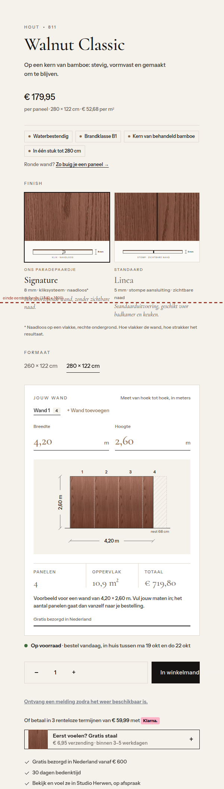
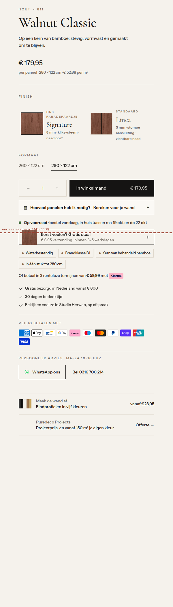
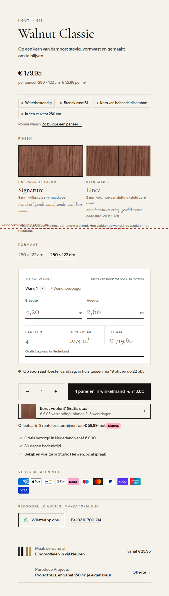
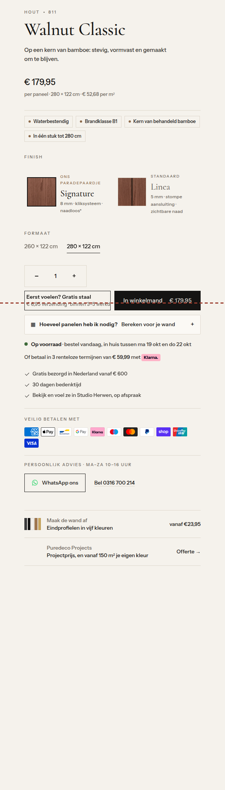
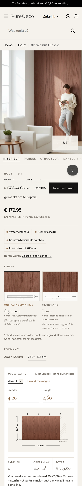
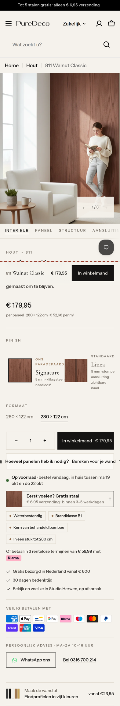

Artboard · gesimuleerd op de echte H1-test-pagina · nog niets opgeslagen
Dit is geen nieuw ontwerp. Alle beelden hieronder zijn schermafbeeldingen van de echte productpagina in H1-test (811 Walnut Classic), waarin ik alleen bestaande onderdelen heb verplaatst of compacter gemaakt. Dezelfde foto's, finishkaarten, calculator, staalknop en teksten. De rode stippellijn is het einde van het eerste scherm op een laptop (1440 × 1000).
Blijft zoals het is
Galerij met Interieur · Paneel · Structuur (close-up) · Aansluiting · Montage, de finishkaarten Signature/Linea, de calculator met tekening, levertijd, gratis staal, Klarna, advies via WhatsApp, eindprofielen, Puredeco Projects, en verder alle blokken eronder.
Wat verandert
Alleen de volgorde in de rechterkolom en een paar fouten. Daardoor staat "In winkelmand" in optie A op 817 px in plaats van 1.956 px: op het eerste scherm.
Knop op 1.956 px

Knop op 817 px

Knop op 1.546 px

Knop op 968 px

Nu

Optie A

Mobiel
In optie A staat de knop na ±1,7 scherm in plaats van ±2,9 scherm. De vaste balk onderaan ("811 Walnut Classic · € 179,95 · In winkelmand") blijft; de chatknop schuift erboven zodat hij de balk niet meer bedekt.
De rest van de pagina
Oorzaak: een voorraadmeldings-app zet zijn tekst in dezelfde rij als de knop. Die rij krijgt een eigen regel.
Uit dezelfde app; staat er terwijl het product op voorraad is. Alleen tonen bij uitverkocht.
Op desktop blijft de galerij staan (meescrollen) zodat er geen ±1.100 px leeg vlak meer is.
Een stilstaand beeld (poster) uit de film zelf.
Chatknop schuift omhoog als de koopbalk zichtbaar is.
Het grote finish-blok verdwijnt; zie hierboven.
Graag jouw keuze